[tech_bulletin_machines] must be placed on a WordPress page before any of the following
applies.
The AMTEC Agricultural Machinery Data system is an interactive web catalogue that lets users browse, search, and compare the technical specifications of agricultural machines tested by AMTEC. Data is pulled live from a published Google Sheets document, so no database configuration is required — updating the sheet is enough to update the website.
When you open the page, you see the Home View — a grid of category cards, one for each type of agricultural machinery. Each card shows a photo (if set in the sheet) and the category name.
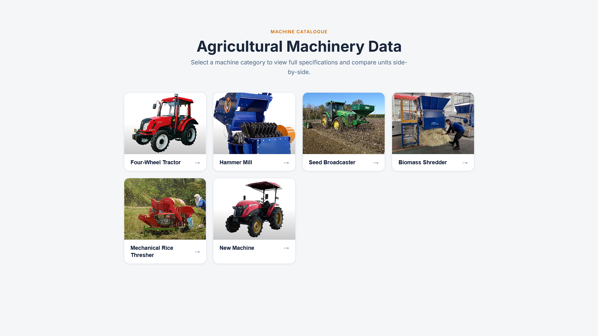
photo_url column of the Categories sheet.
If empty, a placeholder icon is shown.#category=four-wheel-tractor and the category
view loads.#category=four-wheel-tractor appended to take someone directly to a specific category without
needing to click through the home page.
After selecting a category, you land on the Category View. The Machine List tab is active by default, showing a card for every machine in the sheet.
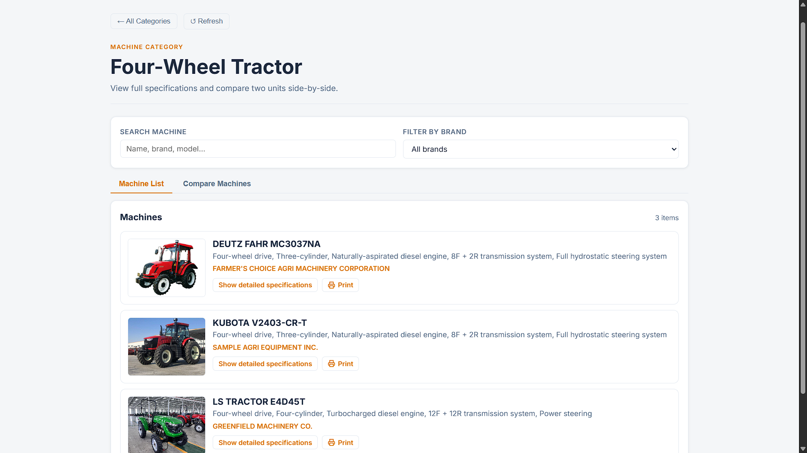
photo_url spec row. Shows a placeholder icon if
missing.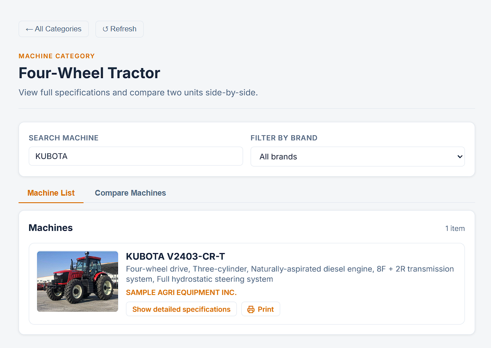
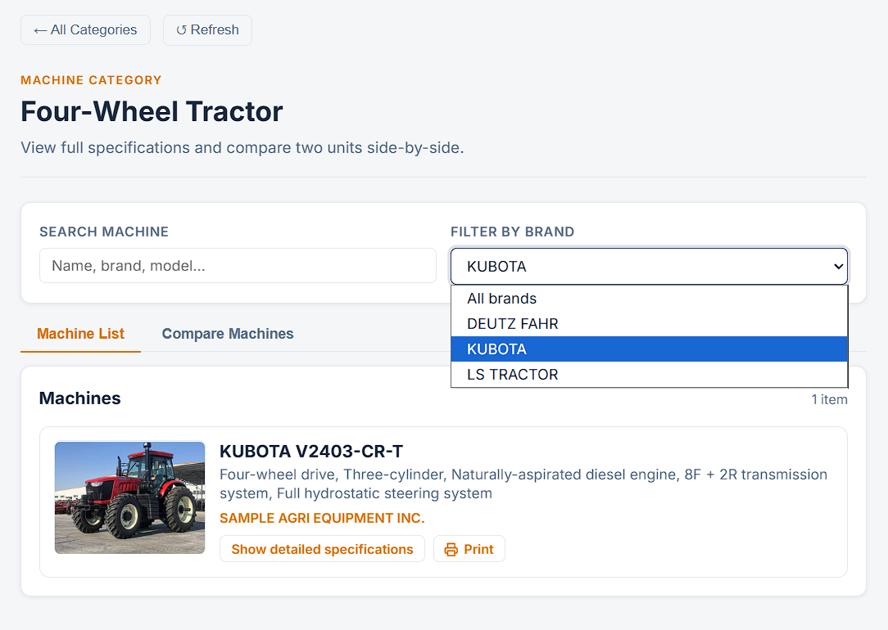
Use the Filter by brand dropdown to show only machines from one manufacturer. Combine it with the keyword search to narrow results further. Select All brands to remove the filter.
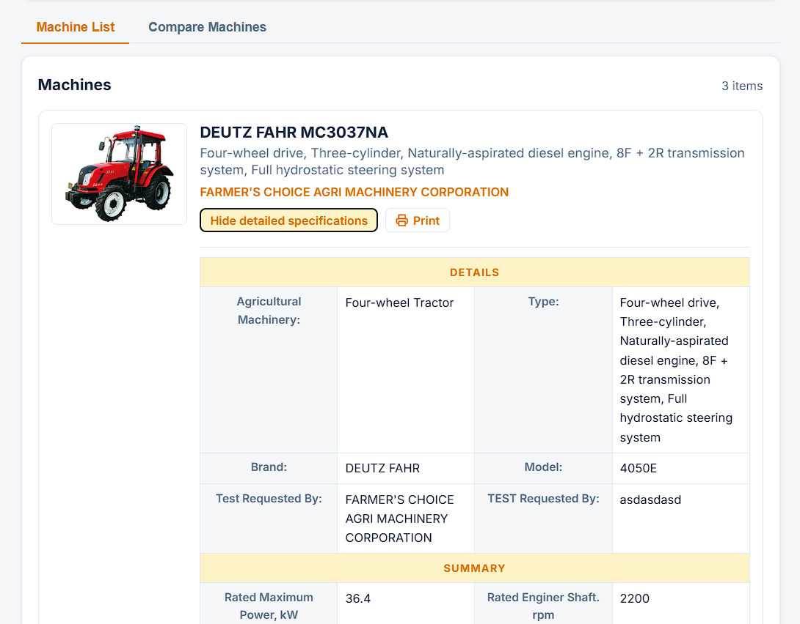
The Compare Machines tab lets you place two machines from the same category next to each other and compare every specification row by row.
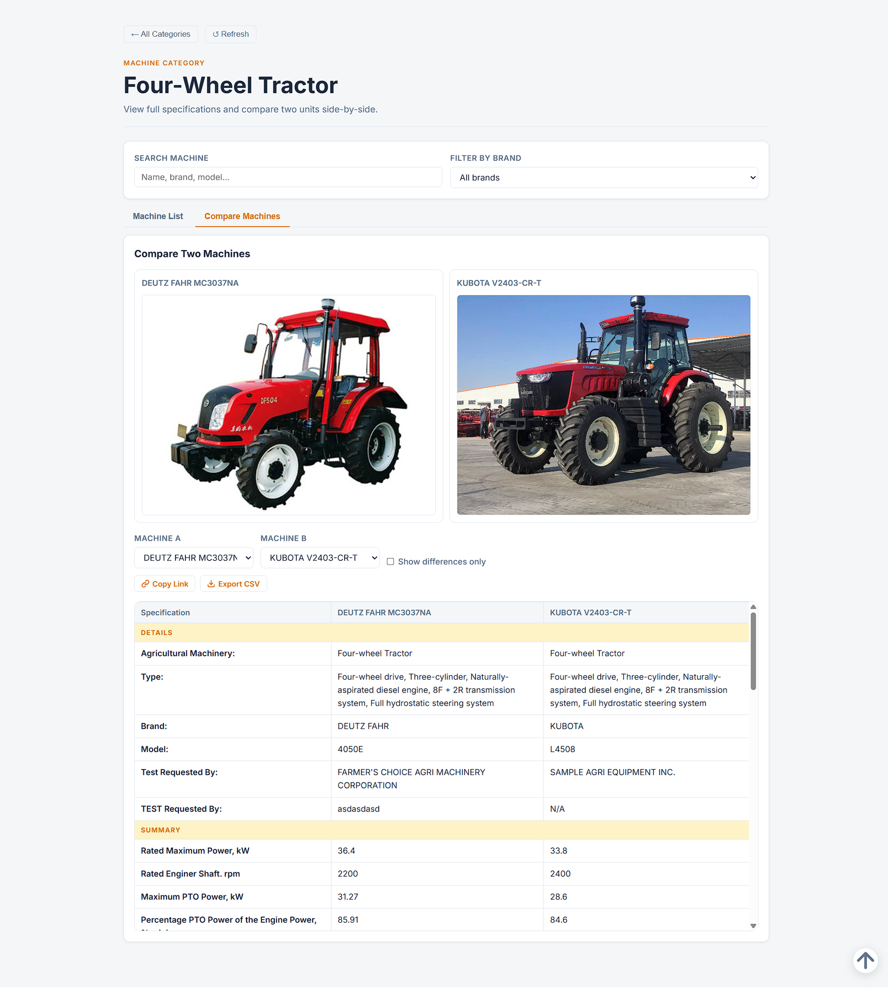
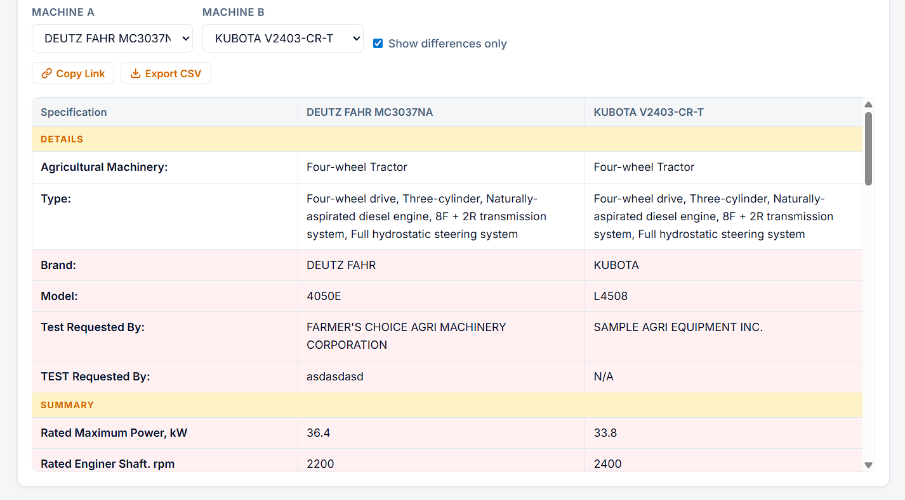
Tick "Show differences only" to hide rows where both machines have identical values. Rows that differ are highlighted in light red.
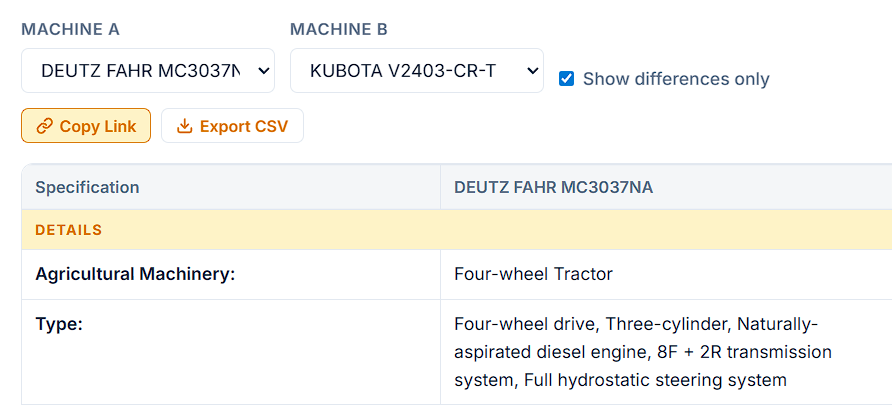
…#category=four-wheel-tractor&compare=kubota-l3408,ford-6610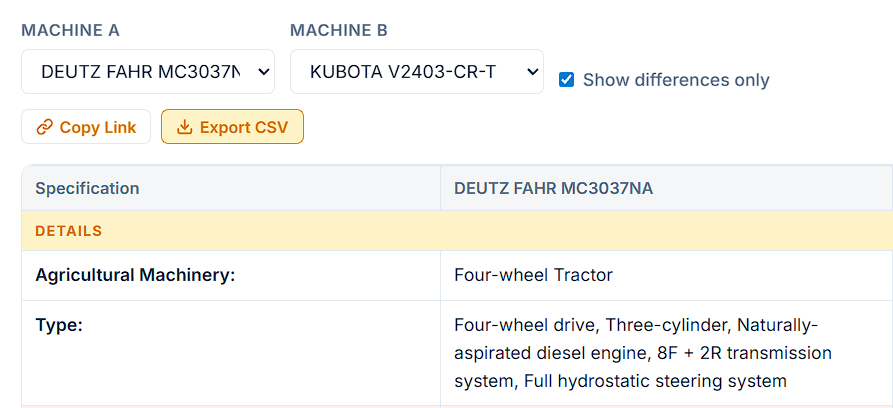
.csv file downloads automatically, named
compare-[id-a]-vs-[id-b].csv.
Each machine card has a Print button that generates a formatted one-page specification bulletin complete with AMTEC and UPLB logos, machine photo, and the full spec table — ready to print or save as PDF.
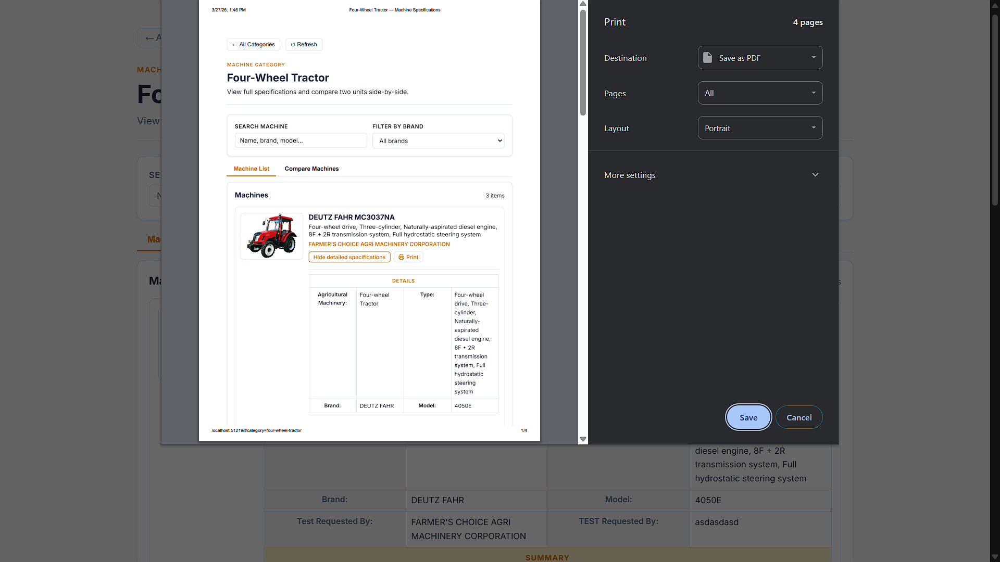
photo_url is set in the sheet.The system caches machine data in the browser for 5 minutes to reduce load on Google Sheets. If you have just edited the spreadsheet and want to see the changes immediately, use the Refresh button.
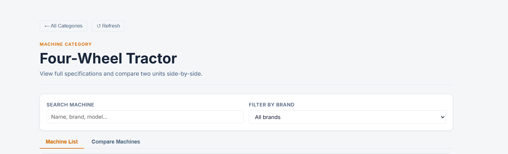
All content is managed entirely inside Google Sheets. There are two types of sheet tabs: a Categories index sheet and one machine data sheet per category.
Tab name must be exactly Categories. Each row is one category.
| Column | Description |
|---|---|
| id | URL slug (e.g.
four-wheel-tractor)
|
| label | Display name (e.g. Four-Wheel Tractor) |
| gid | Sheet tab GID (found in the sheet URL) |
| icon | Emoji icon (optional) |
| photo_url | Full URL to category card image |
Each machine is a column. Each specification is a row. Column A is the spec label; columns B, C, D … are the machines.
Photo URL and paste the full image URL in each machine's column.
| Problem | Likely Cause | Fix |
|---|---|---|
| Category grid shows "No machine categories" | Categories sheet not published or tab name wrong | Verify the tab is named exactly
Categories and the sheet is published as CSV.
|
| "No machine data found for this category" | Wrong GID in the Categories sheet, or machine tab is empty | Copy the GID from the sheet URL and paste it
into the gid column. Confirm the tab has data rows. |
| Machine photos not showing | URL is not a direct image link, or image is not publicly accessible | Use a full https:// URL that ends
in an image extension. Upload to WordPress Media Library for reliable URLs. |
| Print button does not open a window | Browser is blocking pop-ups | Click the pop-up blocked icon in the address bar → "Always allow pop-ups from this site". |
| Sheet edits not appearing after Refresh | Google Sheets publication has a delay | Wait 2–3 minutes after saving, then click Refresh again. |
| Compare table shows "N/A" for one machine | Machines have different numbers of spec rows | Ensure all machine columns in the sheet have the same number of rows as the first column. |
| Spec section headers not appearing | Section rows have data in machine columns | A row becomes a section header only if ALL machine columns in that row are empty. Clear any accidental values. |
README.md
file for technical details about the WordPress installation, CSP configuration, and script module loading.